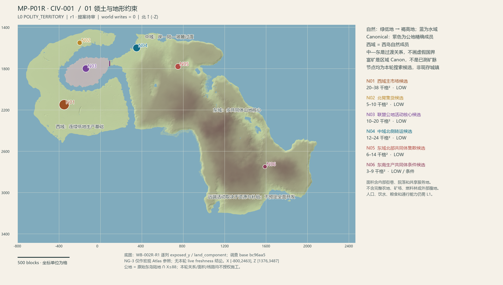

L0 独立提案 · HANDOFF_READY / 待 GPT + Owner 审核 · world writes = 0
点是候选位置；搜索框不是城界；规模圆是等面积符号；腹地是服务关系。点击图册切换，原图可新窗口放大。

| 候选 | 坐标 X,Z | 建成规模假设 | 形态 |
|---|---|---|---|
| NODE-01 西域主市场候选 | [-350, 2150] | [20000, 38000] 格² / LOW | 沿既有可用通路集聚的院落型混合市镇，生产地留在外围 |
| NODE-02 北臂集货候选 | [-200, 1550] | [5000, 10000] 格² / LOW | 小规模院落簇，不把整个北臂岸线建满 |
| NODE-03 联盟公地活动核心候选 | [-140, 1800] | [10000, 20000] 格² / LOW | 有限常住服务簇与共享活动空地；建成量不等于整个公地面积 |
| NODE-04 中域北侧转运候选 | [350, 1600] | [12000, 24000] 格² / LOW | 低地口袋内较紧凑混合前沿，装卸服务与居民共存但分流 |
| NODE-05 东域北部共同体集散候选 | [750, 1780] | [6000, 14000] 格² / LOW | 不连续台地簇，总建成面积小于地理扩散范围 |
| NODE-06 东南生产共同体条件候选 | [1590, 2750] | [3000, 9000] 格² / LOW | 离散小台地簇，禁止单一大圆形矿城 |
无现存建筑面积或粮食自给认证；节点 06 为条件分支，可为 0。精确场地、饮水、港航、实存和承载量必须在 L1 重查。禁止直接交 Builder 施工。